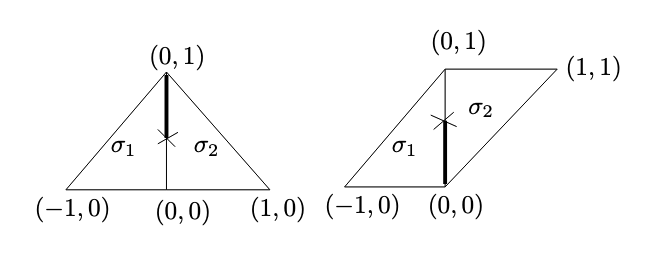

Here we go through a complete example of reconstructing the central fiber of a toric degeneration from its dual intersection complex.
Affine manifolds with singularities and polyhedral decompositions.
First recall the definitions of affine manifolds with singularities and polyhedral decompositions thereof:
Definition
Not written
Affine Manifold With Singularities
Definition
Let \(B\) be an integral affine manifold with singularities. A polyhedral decomposition of \(B\) is roughly a compatible collection of polyhedral decompositions of the charts of \(B\). More precisely, it is a collection \(\mathcal P\) of closed subset of \(B\) called cells covering \(B\) which satisfies the following properties. First, we require that all vertices of \(\mathcal P\) are nonsingular, that is, if \(\{v\} \in\mathcal P\) then \(v\in B\setminus \Delta\). Given such a \(v\), we then require that there exists a closed neighborhood \(R_v\subseteq T_{B,v} \) of the origin at the tanget space of \(B\) at \(v\) with a polyhedral decomposition \(\mathcal P_v\) together with the continuous map \(\exp_v:R_v\to \exp_v(0) = v\) (that is, \(R_v\) is a “closed chart” of \(B\) at \(v\), with the origin taking the place of \(v\), and \(\mathcal P_v\) is a polyhedral decomposition of \(R_v\) in the usual sense for a closed subset of Euclidean space). We additionally require the following:
- \(\exp_v\) is locally a homeomorphism onto its image, is injective on \(\Int(\tau)\) for all \(\tau\in \mathcal P_v\), and is an integral affine map in some neighborhood of the origin.
- For every top-dimensional \(\widetilde \sigma \in \mathcal P_v\), \(\exp_v(\Int(\widetilde \sigma)) \cap \Delta = \emptyset\) and the restriction of \(\exp_v\) to \(\Int(\widetilde \sigma)\) is integral affine. Furthermore, \(\exp_v(\widetilde \tau) \in \mathcal P\) for all \(\widetilde \tau \in \mathcal P_v\).
- A cell \(\sigma\in \mathcal P\) contains \(v\) if and only if \(\sigma = \exp_v(\widetilde \sigma)\) for some \(\widetilde\sigma \in \mathcal P_v\) for all \(\widetilde \tau \in \mathcal P_v\).
- Every \(\sigma\in \mathcal P\) arises in this way, that is, every \(\sigma\) contains a vertex \(v\) with \(\{v\}\in \mathcal P\).
We have an additional condition which will often be of interest, and we say that \(\mathcal P\) is toric if it satisfies it:
- For each \(\sigma\in \mathcal P\), there is a neighborhood \(U_\sigma\subseteq B\) of \(\Int(\sigma)\) and an integral affine submersion \(S_\sigma:U_\sigma \to M' _ {\mathbb R}\) where \(M'\) is a lattice of rank equal to \(\dim B - \dim \sigma\) and \(S _\sigma(\sigma\cap U_\sigma) = \{0\}\).
Polyhedral Decomposition Of Affine Manifold
Given the data \((B, \mathcal P)\) of an affine manifold with singularities and a polyhedral decomposition, we have enough data to form the preferred etale cover of \(X_0(B, \mathcal P, s)\).
Given an affine manifold with singularities and a polyhedral decomposition \((B, \mathcal P)\), the first step in constructing the central fiber \(X_0\) of a toric degeneration whose dual intersection is \((B, \mathcal P)\) is to write down a collection of sets which will be glued to form an etale cover of \(X_0\). This is that process.
First note that for a cone \(\sigma \in \mathcal P\), the vector space \(\Lambda_{\sigma, \mathbb R}\) is the stalk of \(\Lambda_{\mathcal P, \mathbb R}\) at any point \(y\in \Int(\sigma)\). Definition 1.31 in “Mirror Symmetry via Log Degeneration Data I” notes that the spaces \((\Lambda_{\mathcal P, \mathbb R})_y\) are all canonically identified by parallel transport for different choices of \(y\in \Int(\sigma)\). The sheaf \(\Lambda_{\mathcal P, \Lambda}\) is a subsheaf of the typical \(\Lambda_{\mathbb R}\) sheaf on \(B_0 = B\setminus \Delta\), defined
\[\Gamma(U, \Lambda_{\mathcal P, \mathbb R}) = \left\{v\in \Gamma(U, \Lambda_{\mathbb R}) ~ \mid ~ \forall y\in U, \sigma \in \mathcal P \text{ with } y\in \sigma, v\text{ is tangent to } \sigma \text{ at }y\right\}.\]
In practice, \(\Lambda_{\mathcal P, \mathbb R}|_{\Int(\sigma)}\) is simply the tangent sheaf of \(\Int(\sigma)\) thought of as an affine manifold in its own right.
We will construct affine toric varieties \(U_\sigma\) and \(V_\sigma\) for every maximal cell \(\sigma \in \mathcal P\).
- Form the cone over \(\sigma\):
\[C(\sigma) = \{(rp, r) ~ \mid ~ r\in \mathbb R_{\geq 0}, p \in \widetilde \sigma\}\subseteq \Lambda_{\sigma, \mathbb R} \oplus \mathbb R\] That is, choose your favorite vertex \(v\in \sigma\), embed \(\sigma\) in \(\mathbb R^{\dim \sigma}\oplus \mathbb R\) at height \(1\) with \(v \mapsto (0,1)\) and take the cone over the resulting embedding.
- Take the dual cone:
\[C(\sigma)^\vee = \left\{m \in \Lambda_{\sigma, \mathbb R}^\vee \oplus \mathbb R ~ \mid ~ \langle m, v\rangle \geq 0, \forall v \in C(\sigma)\right\}\]
- Due to the integral structure of \(B\) we have a lattice inside of \(\Lambda_{\sigma, \mathbb R}^\vee\), which we denote by \(\Lambda_{\sigma}^\vee\). We intersect our cone with it to obtain a monoid in standard toric fashion:
\[P_\sigma = C(\sigma)^\vee \cap (\Lambda_{\sigma}^\vee \oplus \mathbb Z)\]
- We define
\[U_\sigma = \Spec \mathbb Z[P_\sigma].\]
- To define \(V_\sigma\), we have two options.
- We can either form it as a quotient of \(\mathbb Z[P_\sigma]\). To do this, we note that there is an element in \(P_\sigma\) which corresponds to the height projection on \(C(\sigma)\), it’s denoted \(\rho_\sigma:\Lambda_{\sigma}\oplus \mathbb Z\to \mathbb Z\) and is simply projection onto the second factor. In coordinate on \(\Lambda_{\sigma}^\vee\oplus \mathbb Z\), it is the element \((0,...,0,1)\). We then define
\[V_\sigma = \Spec \mathbb Z[P_\sigma]/(z^{\rho_\sigma}).\]
- We can define a new monoid from \(P_\sigma\), denoted \(\partial P_\sigma\), which as a set is the integral points on the boundary of \(C(\sigma)^\vee\) union infinity,
\[\partial P_\sigma = \left(\partial C(\sigma)^\vee \cap (\Lambda_{\sigma}\oplus \mathbb Z)\right)\cup \{\infty\}\] and whose addition is defined by \[ x + y = \begin{cases} x + y & x + y \in \partial C(\sigma)^\vee \cap (\Lambda_{\sigma}\oplus \mathbb Z) \\ \infty & \text{otherwise} \end{cases}. \] Then set \[V_\sigma = \Spec \mathbb Z[\partial P_\sigma].\] In either case we get the same thing.
- Finally, if we wish \(X_0\) to be a scheme over \(S\), then we define our preferred etale cover to be
\[\big\{V_\sigma \times_{\Spec \mathbb Z} S\big\}_{\sigma \in \mathcal P_{\text{max}}}.\]
The example

Figure 1: Example of affine manifold with singularities
Here is a single affine manifold with singularities \(B\). Topologically, \(B\) is the union of two triangles and it has one singularity. Depicted above are its two charts, \(U_1\) on the left and \(U_2\) on the right. Their intersection in \(B\) is just the two triangles with the common edge removed. The transition between them is the identity on the left connected component and the linear transform \((x,y) \mapsto (x, x+y)\) on the right component.